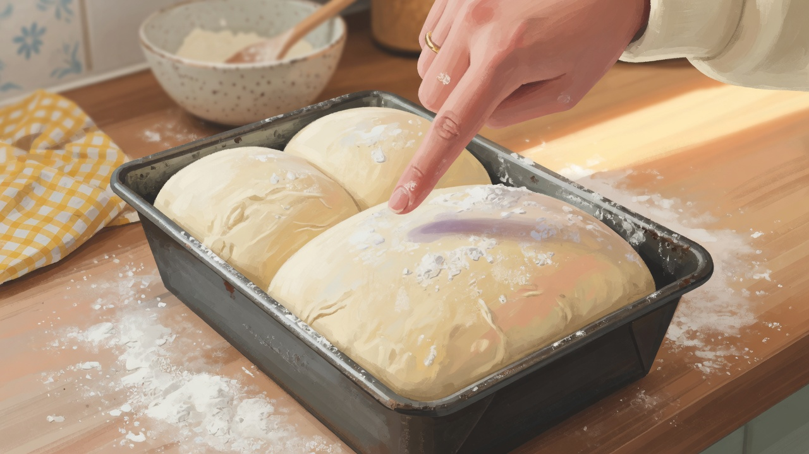

필기를 '나중에' 미루면 생기는 일
저는 준비 초반에 실기를 우선했습니다. 필기는 '교재 한 번 훑으면 된다'고 가볍게 봤는데, 2025년 2월 모의고사에서 60점대가 나왔을 때 위험을 느꼈습니다. 암기량이 부족해서라기보다, 비슷한 개념을 헷갈리는 문제에서 점수가 새고 있었습니다.

이 글은 필기 전 범위 요약이 아닙니다. 제가 실제로 틀렸던 유형과, 그걸 줄이기 위해 쓴 오답 노트·비교 정리·루틴을 중심으로 적습니다. 시험 과목·문항 수는 연도별로 바뀔 수 있으니 최신 요강을 확인하세요.
헷갈렸던 유형 — 비슷한 말, 다른 답
필기에서 자주 틀린 것은 '모르는 문제'보다 아는 것 같은 문제였습니다.
- 직접법·중간법·스폰지법 — 공정 순서와 재료 투입 시점
- 가공처리 유제품·반죽 재료 — 온도·보관 조건 숫자
- 이스트·베이킹파우더 — 사용 상황과 반응 원리
- 교반 속도·시간 — 제품별 목적 차이
한 번에 외우려 하지 않고, 두 개씩 비교 표로 적었습니다. 예: '직접법 vs 중간법 — 발효 횟수, 소요 시간, 적합 제품'. 표 한 장이 교재 5페이지보다 시험 직전에 유용했습니다.
위생·안전 숫자 — 외우다 말고 '왜' 붙이기
위생 파트는 숫자가 많습니다. 온도, 시간, 농도. 저는 처음에 숫자만 반복 암기했다가 비슷한 보기에서 틀렸습니다. 이후에는 숫자 옆에 이유 한 줄을 붙였습니다. '○○°C — 이 온도에서 ○○ 균 증식 억제'처럼요. 완벽한 전문 지식이라기보다, 시험 보기에서 걸러내기 위한 최소 이해였습니다.
기구·설비 — 이름보다 용도로 묶기
오븐·교반기·발효기 이름이 비슷하게 나올 때, 저는 용도로 묶어 외웠습니다. '대량 반죽 → ○○', '정밀 온도 유지 → ○○'. 실기를 하고 있으면 기구 이름이 덜 낯설었습니다. 학원에서 쓰던 기계와 교재 그림을 연결해 보는 것도 도움이 됐습니다.
필기만 파고들 때보다, 실기 하루 끝나고 30분 필기를 한 날이 기억에 더 오래 남았습니다. 손으로 본 공정이 이론 문제를 읽을 때 배경이 되어 주었습니다.
오답 노트 루틴 — 매일 20문항, 틀린 것만 다시
2025년 3월부터 필기 루틴을 고정했습니다.
- 기출 또는 모의 20문항 (25분)
- 틀린 문제만 정답·해설 읽기 (15분)
- 틀린 이유를 한 줄로 분류: 개념 / 숫자 / 헷갈림
- 주 1회: '헷갈림' 분류만 다시 풀기
하루 1시간을 넘기지 않았습니다. 실기 연습이 우선이었고, 필기는 틀리는 패턴을 줄이는 쪽에 맞췄습니다. 4월에는 오답 노트만 모아 40문항을 반복했고, 그때 점수가 80점대로 올라갔습니다.
오답 노트는 처음엔 너무 정리하려다 멈췄습니다. A4에 '틀린 번호 / 왜 틀렸는지 한 줄'만 적는 방식으로 바꾼 뒤, 3주 만에 같은 유형이 줄었습니다.
실기와 겹칠 때 — 필기를 끊지 않는 법
실기 집중 달(2024년 12월~2025년 2월)에도 필기를 완전히 끊지 않았습니다. 하루 30~40분이 전부였지만, 끊었을 때 다음 달에 다시 읽는 데 시간이 더 들었습니다. 지하철·이동 시간에 틀린 문제만 보는 방식도 썼습니다.
시험 6주 전부터는 1일 1시간으로 늘렸습니다. 새 범위를 넓히기보다 기출·오답 반복에 무게를 뒀습니다. 합격선 근처라면 새 챕터보다 틀린 유형 제거가 체감상 효율이 좋았습니다.
재료·영양 — 이름이 비슷한 재료끼리 묶기
밀가루·이스트·유제품 파트에서 틀린 문제는 대부분 용도 혼동이었습니다. 강력분·중력분·박력분을 외울 때 단백질 함량 숫자만 적지 않고, '시험에 자주 나오는 제품' 한 줄을 붙였습니다. 예: 식빵 반죽에 자주 쓰이는 분류, 과자 반죽에 쓰이는 분류 — 완벽한 산업 지식이 아니라 시험 선택지를 거르기 위한 최소 묶음이었습니다.

영양소·칼로리 계산 문제는 공식을 외우기보다 단위를 먼저 확인하는 습관이 실수를 줄였습니다. g과 mg, 100g 기준과 1회 제공량 기준이 섞여 있으면 같은 공식도 답이 달라집니다. 연습 때 단위를 밑줄 친 문제만 따로 모아 두었습니다.
위생 파트에서 '냉장·냉동 온도' 숫자를 외울 때, 냉장고 문 안쪽 스티커에 적어 두었습니다. 매일 우유 꺼낼 때 한 번씩 보니 시험 전날까지 잊지 않았습니다. 공부 방식이 화려할 필요는 없었습니다.
기출 활용 — 처음부터 끝까지가 아닌 '틀린 회차'만
기출을 회차 순서대로 전부 풀기보다, 틀린 문항이 3개 이상 나온 회차만 일주일 뒤 다시 풀었습니다. 같은 실수가 반복되면 그 문항을 오답 노트 맨 앞에 올렸습니다. 반복되지 않으면 노트에서 제거했습니다. 이렇게 하면 노트 두께가 줄고, 시험 직전에 볼 양이 명확해졌습니다.
최근 회차는 낯선 표현이 나올 수 있어 해설을 꼼꼼히 읽었고, 오래된 회차는 법규·수치 개정 여부를 먼저 확인했습니다. '예전 기출이라 안 나온다'기보다 '예전 기출이라 표현이 다르다'로 접근했습니다.
필기 시험 당일 — 시간 배분
2025년 5월 필기 당일, 저는 한 번에 고민하지 않기를 원칙으로 했습니다. 모르는 문제에 3분 이상 붙잡지 않고 표시만 해 두고 넘겼습니다. 1회독 후 표시한 문제만 다시 보는 2회독 방식이었습니다.
계산·비교 문제는 손으로 간단히 메모할 공간을 남겨 두었습니다. 필기장 여백이 좁으면 실수가 늘었습니다. 연습 때도 실제 답안지 느낌으로 풀어 본 것이 도움이 됐습니다.
필기만 막힐 때
점수가 오르지 않으면 '더 외우기'보다 틀린 유형 분류를 먼저 해 보세요. 저는 개념 부족보다 헷갈림이 많았습니다. 3편 실기 망한 포인트와 병행하면 이론·손이 연결됩니다.
다음 편은 시험 당일과 합격 경험입니다.
실전 적용 노트
교재는 2권 이상 섞지 않고, 한 권 + 기출로 끝까지 갔습니다. 여러 책을 동시에 열면 비슷한 단어 정의가 달라 더 헷갈렸습니다. 기출은 최근 5회년 위주로, 오래된 문제는 개정 여부를 먼저 확인했습니다.
필기 합격 후에도 위생 숫자는 잊기 쉽습니다. 합격이 필기 지식의 끝은 아니지만, 시험 통과 목적이라면 오답 패턴 제거가 암기량 확장보다 빠른 경우가 많았습니다.
시리즈 4편입니다. 목차는 6편 안내에서 확인할 수 있습니다.
정리하며
필기는 실기를 대체하지 않습니다. 반대도 마찬가지입니다. 저에게는 둘을 겹쳐 가며 '비슷한 말'을 구분하는 훈련이 합격에 가까웠습니다. 다른 교재·회차 경험이 있으면 문의로 알려 주세요.
초보자가 자주 실수하는 포인트
- 실기만 하다 필기를 시험 1개월 전에 몰아쓰기
- 숫자만 암기하고 보기에서 비슷한 수치 구분 실패
- 여러 교재를 동시에 열어 정의가 섞이기
- 틀린 유형 분류 없이 문제 수만 늘리기
체크리스트
- 헷갈리는 개념 2개씩 비교 표 만들기
- 오답 노트에 틀린 이유 분류(개념/숫자/헷갈림)
- 시험 6주 전 기출·오답 비중 늘리기
- 필기 당일 2회독 시간 배분 연습
자주 묻는 질문
- 필기만 따로 먼저 보면 되나요?
- 가능합니다. 다만 저는 실기 감각을 유지하려고 필기를 완전히 분리하지 않았습니다. 일정이 촉박하면 필기 합격 후 실기 집중도 흔한 루트입니다.
- 몇 점 이상이면 안심해도 되나요?
- 회차·난이도마다 다릅니다. 저는 모의 80점대가 나온 뒤 오답만 반복했습니다. 합격선은 최신 공고 기준으로 확인하세요.
이 글은 운영자의 직접 경험을 바탕으로 작성되었으며, 오븐·재료·환경에 따라 결과는 달라질 수 있습니다. 식품 위생·알레르기 등 건강 관련 판단을 대체하지 않습니다.